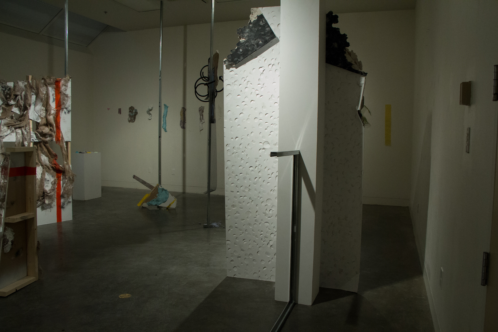

Artwork: Installations
Above the Horizontal
Mixed media, dimensions may vary, 2018.
Above the Horizontal
Mixed media, dimensions may vary, 2018.

Industrial Skins
Left: Touchline (3), mixed media, 2018.
Centre: Above the Horizontal, mixed media, 2018.
Right: Back (Right Wing), mixed media, 2018.

Back (Right Wing)
Mixed media, 2018.

Back (Right Wing)
Mixed media, 2018.

Back (Right Wing)
Detail, mixed media, 2018.

Industrial Skins
Installation shot, mixed media, 2018.
Backs
Left: Back (Inside Centre), mixed media, 2018.
Centre: Back (Outside Centre), mixed media, 2017.
Right: Back (Fly Half), mixed media, 2017.
Back (Fly Half)
Mixed media, 2017.

Industrial Skins
Detail, Above the Horizontal, mixed media, 2017.
Back (Inside Centre)
Detail, mixed media, 2018.

Back (Inside Centre)
Mixed media, dimensions may vary, 2017.

Industrial Skins
Installation shot, mixed media, 2018.
Back (Outside Centre)
Detail, mixed media, 2017.
Back (Outside Centre)
Mixed media, 2017.

Industrial Skins
Installation Shot
Left: Back (Right Wing), mixed media, 2018.
Centre: Above the Horizontal (detail), mixed media, 2018.
Right: Sin Bin, mixed media, 2018.

Sin Bin
Mixed media, 2018.

Sin Bin
Detail, mixed media, 2018.

Scrum
Mixed media, 2018.

Scrum
Mixed media, 2018
Back (Right Wing)
Side view, mixed media, 2018.
_ESR.jpg)
Back (Right Wing)
Detail, mixed media, 2018.

Above the Horizontal
Installation shot, mixed media, 2017.
Strike
Mixed media, 9ft x 4ft, 2017.

Strike
Mixed media, 9ft x 4ft, 2017.
Ruck
Detail, mixed media, 5ft x 5ft, 2017
Ruck
Mixed media, 5ft x 5ft, 2017.